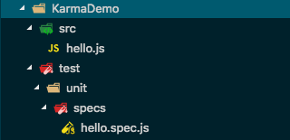
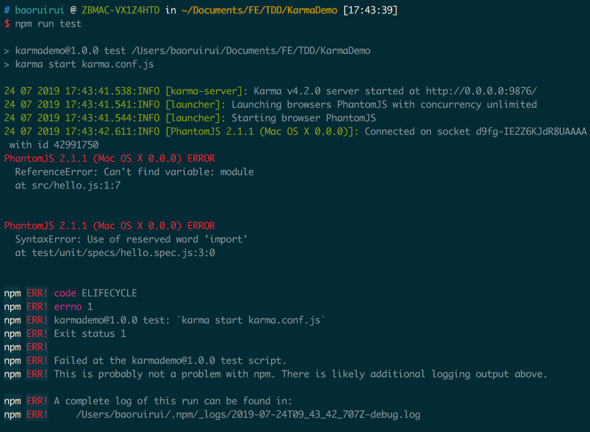
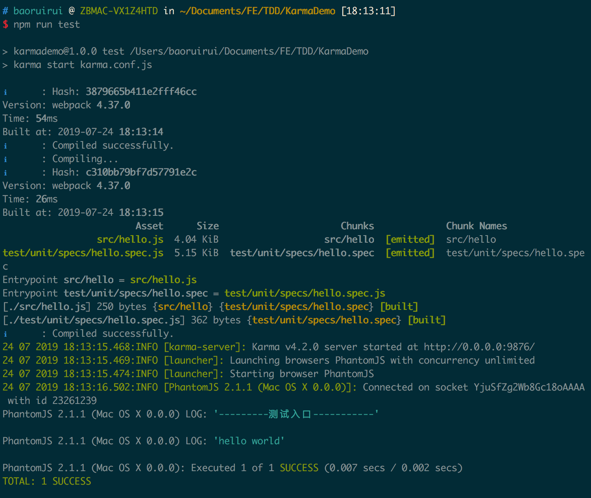

Karma+Mocha+PhantomJS搭建测试环境(支持ES6)
新建一个KarmaDemo的项目，文件结构如下：

按以下步骤操作：
1
2
3
4
5
6
7
8
9
10
11
12
13
14
15
16
17karma init #生成karma.conf.js
npm init #生成package.json文件
npm install karma karma-mocha karma-chai --save-dev #安装插件
npm install mocha chai --save-dev #安装插件
npm install phantomjs-prebuilt karma-phantomjs-launcher --save-dev #安装插件
#修改package.json文件
"scripts": {
"test": "karma start karma.conf.js"
}
#修改karma.conf.js文件
files: [
'./src/*.js',
'./test/unit/specs/*.spec.js'
],
exclude: [
'./node_modules/'
],执行 npm run test，会报错：

报错原因：浏览器不支持ES6 Modules。默认情况下，Karma是不支持ES6语法的。
解决办法：让Karma支持ES6。需要使用webpack和babel
安装webpack、babel相关套件
1
2
3
4
5
6
7
8
9
10
11
12
13
14
15
16
17
18#修改package.json文件的devDependencies字段如下：
"devDependencies": {
"@babel/core": "^7.5.5",
"@babel/preset-env": "^7.5.5",
"babel-loader": "^8.0.6",
"chai": "^4.2.0",
"karma": "^4.2.0",
"karma-chai": "^0.1.0",
"karma-mocha": "^1.3.0",
"karma-phantomjs-launcher": "^1.0.4",
"karma-webpack": "^4.0.2",
"mocha": "^6.2.0",
"phantomjs-prebuilt": "^2.1.16",
"webpack": "^4.37.0"
}
#执行以下命令安装
npm install修改karma.conf.js文件
1
2
3
4
5
6
7
8
9
10
11
12
13
14
15
16
17
18
19
20
21
22
23#修改karma.conf.js文件
frameworks: ['mocha', 'chai'],
preprocessors: {
'./src/*.js':['webpack'], // 把es6语法转换成浏览器支持的语法再去调用浏览器
'./test/unit/specs/*.spec.js':['webpack']
},
webpack:{
mode: 'development',
module: {
rules: [
{
test: /\.js$/,
use: {
loader: 'babel-loader',
options: {
presets: ['@babel/preset-env'],
}
},
exclude: /node_modules/
}]
}
},执行npm run test，得到结果(如图)，测试成功

最后，附上karma.config.js配置
1 | // Karma configuration |